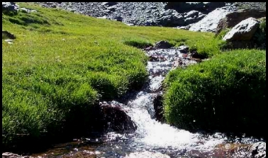

|
|
| Parque
Natural |
Los
valores paisajísticos y ecológicos del
Espacio Natural de Candelario, son tales que en el confluyen
varias figuras de proteccion. Lugar de Interés
Comunitario (LIC), Zona de Especial Protección
para las Aves (ZEPA), Important Bird Area (IBA) y una
de las dos Zonas Nucleo de la Reserva de la Biosfera
de las Sierras de Francia y Béjar. Asimismo los
estudios científicos realizados sobre diversos
aspectos de la naturaleza en la Sierra de Candelario/Béjar
en los últimos decenios revelan el gran interés
que tantos investigadores tienen por este macizo del
Sistema Central. |
 |
Debido
a su altitud, influencia atlántica y aislamiento
geográfico, la sierra ha servido de refugio a
muchas especies animales y de plantas boreoalpinas y
eurosiberianas tras la retirada de los hielos glaciares,
a la vez que, como resultado de cambios climatológicos
y el impacto humano durante los últimos 10.000
años, integra muchas especies atlánticas
entre las mediterráneas dominantes. Varias especies
raras españolas tienen aquí sus límites
de distribución meridional o septentrional, requiriendo
la protección de los ecosistemas forestasles
y de alta montaña para sobrevivir. La designación
como Parque Natural, será una oportunidad para
sumarse a las otras figuras de protección y recibir
fondos europeos y autónomicos con el fin de establecer
un desarrollo auténticamente sostenible para
la zona. |
 PORN de Candelario
PORN de Candelario |
|
|
Legislación
|
|
- Estatal
- Ley
4/1989, de 27 de marzo, de conservación
de los espacios naturales y de la flora y fauna
silvestres (consolidada a fecha de octubre de
2004).
- Ley
40/1997, de 5 de noviembre, sobre reforma de
la Ley 4/1989, de 27 de marzo, de Conservación
de los Espacios Naturales y de la Flora y Fauna
Silvestres
- Ley
41/1997, de 5 de noviembre, sobre reforma de
la Ley 4/1989, de 27 de marzo, de Conservación
de los Espacios Naturales y de la Flora y Fauna
Silvestres
- REAL
DECRETO 1997/1995, de 7 de diciembre, por el
que se establece medidas para contribuir a garantizar
la biodiversidad mediante la conservación
de los habitats naturales y de la fauna y flora
silvestres
|
|
|
Documentos |
|
| Documentos
sobre el valor paisajistico y ecológico. |
|
|
Inversiones
de la Junta en los Espacios Naturales protegidos  |
Los
espacios naturales protegidos conllevan una serie
de inversiones por parte de la Administración,
que inciden de manera positiva y real sobre el desarrollo
y bienestar de los municipios que los integran, siendo
los beneficiarios de tales actuaciones los habitantes
de estas poblaciones. Inversiones que se veran incrementadas
cuando termine el proceso de implantación de
la Red Natura 2000
|
|
Experiencias |
Con
las experiencias que ponemos a continuación,
no pretendemos sugerir una imitación mimética
de los proyectos, sino dar ideas de iniciativas que
se han realizado en otros sitios y que son susceptibles
de financiación, tanto por Red Natura, como por
los programas operativos que recoge
el Programa de Parques Naturales de Castilla y León. |
|
|
Enlaces |
- EUROPARC
- España (es
una organización en la que participan las instituciones
implicadas en la planificación y gestión
de los espacios naturales protegidos del Estado español.
Constituye el principal foro profesional donde se
discuten y elaboran propuestas para la mejora de estos
espacios.)
|